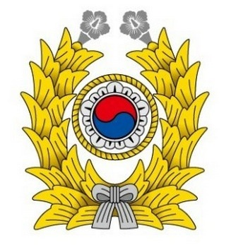

Manage day to day campaign pre/post launch processes (campaign set up, QA, tracking & optimization) for Adobe's demand side platform (DSP)
Identify trends in performance data to drive optimization strategies
Assist team with QA and identifying high-performing site/feeds using SQL and Tableau
Surface, investigate, communicate & drive reported issues to resolution
Act as a liaison between Client Services and Engineering teams for product and troubleshooting issues
Summer Intern, CapLinked July 2014 - August 2015
Collaborated with the Product Management team to conduct competitive analysis and compiled results into an excel master list.
Maintained social media presence through posts and promotions across social media platforms and company blog.
Worked directly with the CEO on business expansion in South Korea.
Developed inside sales processes with the Sales and Operations team.
Conducted research on industries with potential clients and built lists of contacts based on them.

Sergeant, Republic of Korea Army August 2012 - May 2014
Acted as Squad leader for 4 months mentoring and counseling over 15 soldiers. Also lead them in military training sessions by delivering orders and assisting the inexperienced.
Achieved dual citizenship: South Korea & U.S.A
Summer Intern, Accenture May 2012 - July 2012
Worked as a translator for the communication between Korean workers and foreign programmers/advisors.
Data analysis and research for the server merge Accenture was working on for the client (KT: one of the biggest telecom companies in South Korea)
EDUCATION
Carnegie Mellon University Bachelor of Science in Economics, Minor in Human Computer Interactions 2010 - 2016